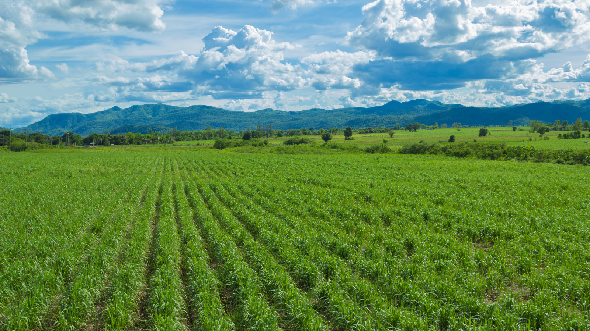
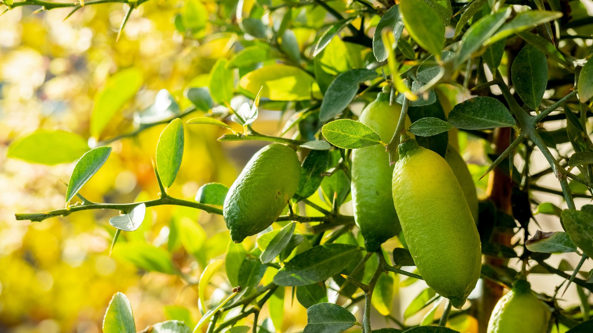

The Future of Crop Diversification in FNQ
Far North Queensland (FNQ) is a region brimming with opportunities for agricultural innovation. With its tropical climate, diverse ecosystems, and a history rooted in farming, FNQ is poised to lead the way in sustainable and diversified agriculture.

The Challenges of Monoculture
For decades, sugarcane has been the backbone of FNQ's agriculture. While it has provided economic stability for many farmers, relying on a single crop is not without risks. Monoculture depletes soil nutrients, reduces biodiversity, and leaves farmers vulnerable to market fluctuations and climate change impacts. Diversifying crops is essential to mitigate these risks and create a more resilient agricultural sector.
What is Crop Diversification?
Crop diversification is the practice of growing a variety of crops on the same land to enhance soil health, increase resilience to pests and diseases, and provide alternative revenue streams for farmers. It's not just about planting more crops; it's about strategically integrating high-value and sustainable options that align with the region's environmental and economic needs.
Opportunities in FNQ

Native Australian Plants
Indigenous plants, such as Kakadu plums, finger limes, and lemon myrtle, have significant potential for high-value markets, including cosmetics, pharmaceuticals, and specialty foods.
Medicinal and Aromatic Plants
Plants like turmeric, ginger, and lemongrass thrive in FNQ's climate and have growing demand in global markets for health and wellness products.
Horticultural Crops
Expanding into tropical fruits, such as mangoes, lychees, and dragon fruit, could enhance FNQ's reputation as a supplier of premium produce.
Industrial Crops
Sugarcane byproducts and innovative crops like hemp and bamboo offer potential for industrial applications and support the transition to a circular economy.
How Technology Drives Diversification
Technological advancements are key to making crop diversification a reality in FNQ. Tools like IoT sensors, drone imaging, and plant metabolomics can provide farmers with real-time insights into soil health, climate conditions, and crop performance. These technologies not only optimize farming practices but also reduce risks associated with transitioning to new crops.
The integration of digital twins is another game-changer. By simulating farming operations, farmers can test different crop combinations and predict their impact on yields, profitability, and sustainability.
Community and Collaboration
Transitioning to a diversified agricultural model requires a collaborative effort. Farmers, researchers, industry stakeholders, and government bodies must work together to create a supportive ecosystem. Community engagement, educational initiatives, and knowledge-sharing platforms can empower farmers to adopt new practices and explore innovative crops.
Shape the Future of FNQ Agriculture
Ready to explore crop diversification opportunities for your farm? Let's work together to create a sustainable and profitable future.
Contact Us Today